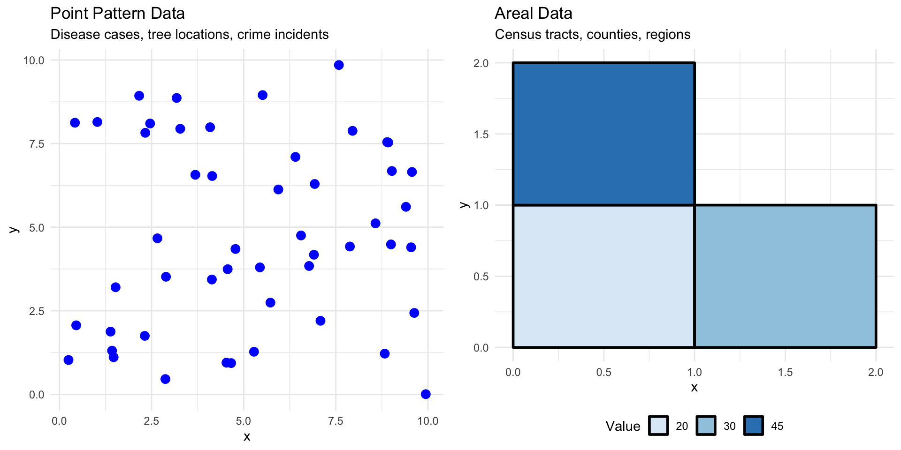
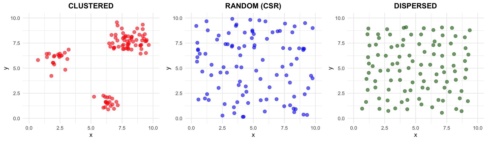
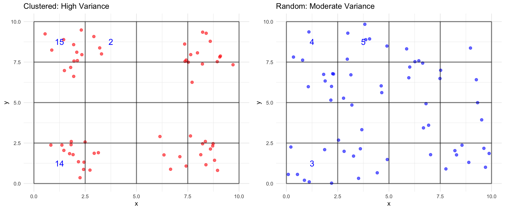
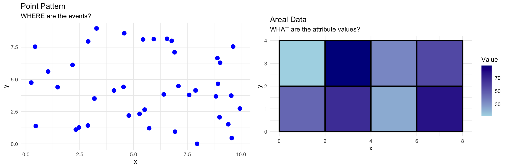
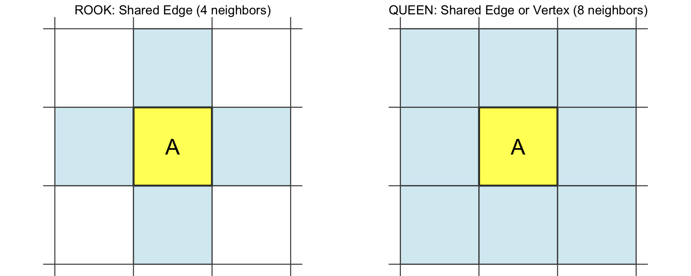
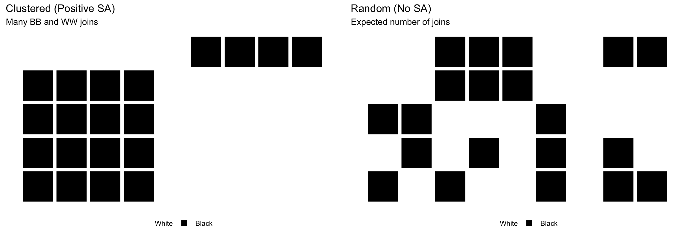
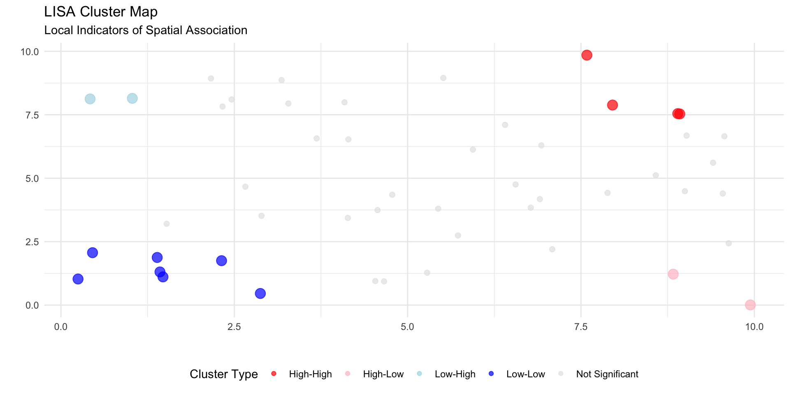
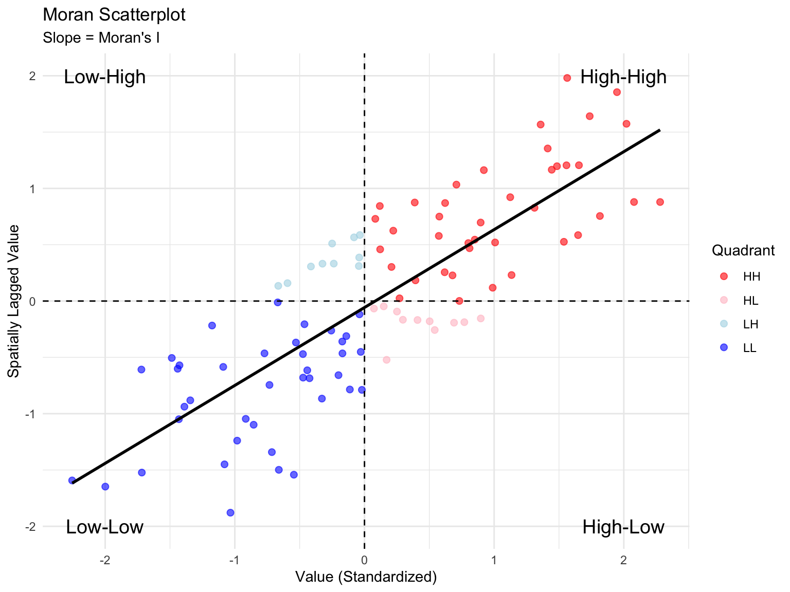

Exploratory Spatial Data Analysis
Point Pattern and Area Pattern Analysis
Lecture 1: Introduction to ESDA & Point Pattern Analysis
Module Overview
Course Structure (3 Lectures × 75 min)
Lecture 1: Foundations & Point Patterns
- Introduction to Exploratory Spatial Data Analysis (ESDA) - Patterns vs. Processes - First-order vs. Second-order Effects - Nearest Neighbor Analysis
Lecture 2: Point Pattern Analysis (continued)
- Quadrat Analysis - Comparing Methods - Applications & Case Studies
Lecture 3: Area Pattern Analysis
- Join Count Analysis - Moran’s I (Global & Local) - Applications to Areal Data
What is Exploratory Spatial Data Analysis?
Core Concepts
- Exploratory: Initial investigation of spatial data
- Visual: Maps, plots, graphs
- Statistical: Quantitative measures
- Hypothesis-generating: Not confirmatory
Key Questions
- Is there spatial pattern?
- Where are the patterns?
- Are patterns clustered or dispersed?
- Are patterns random or systematic?
Important
ESDA reveals structure before formal modeling
Types of Spatial Data
Patterns vs. Processes
Pattern
- What we observe
- The spatial arrangement
- Descriptive
- Examples:
- Clustered disease cases
- Dispersed fire stations
- Random plant distribution
Process
- Why it exists
- The generating mechanism
- Explanatory
- Examples:
- Disease transmission
- Planning optimization
- Seed dispersal mechanisms
WarningCritical Distinction
Multiple processes can produce similar patterns!
Same process can produce different patterns!
Emphasize: We analyze patterns to infer processes, but this inference is not straightforward. Different underlying mechanisms can create similar-looking spatial arrangements.
Pattern-Process Examples
Urban Crime Distribution
Observed Pattern: Crime clustered in certain neighborhoods
Possible Processes:
- Social disorganization (community characteristics)
- Routine activity theory (opportunity structures)
- Broken windows (environmental cues)
- Repeat victimization (contagion effects)
Note
Same pattern, different theoretical explanations!
Need theory + statistical analysis + domain knowledge
First-Order vs. Second-Order Effects
First-Order Effects (Intensity/Density)
- Definition: Variation in the average number of events across space
- What it captures: Spatial trend, large-scale variation
- Example: More disease cases in densely populated areas
Second-Order Effects (Dependence/Interaction)
- Definition: Correlation between events at different locations
- What it captures: Local clustering, spatial dependence
- Example: Disease cases clustered due to contagion (beyond population density)
TipWhy This Matters
Different analysis methods target different effects!
Understanding this helps you choose the right tool.
Visual Comparison: First vs. Second Order

First-Order Effects in Detail
Characteristics
- Large-scale spatial trends
- “Density surface” varies across study area
- Related to environmental/contextual factors
Examples
- Population density → disease incidence
- Elevation → vegetation types
- Distance from CBD → housing prices
Analysis Methods
- Kernel density estimation
- Trend surface analysis
- Quadrat analysis (density variation)
Second-Order Effects in Detail
Characteristics
- Spatial dependence: “Everything is related, but nearby things more so” (Tobler’s Law)
- Local clustering beyond overall density
- Point-to-point interactions
Examples
- Contagious disease spread (beyond density)
- Tree competition effects
- Social influence on voting patterns
Analysis Methods
- Nearest Neighbor Analysis (spacing patterns)
- K-functions, L-functions
- Spatial autocorrelation (for areal data)
Why the Distinction Matters
ImportantInterpretation Challenge
A clustered pattern could result from:
- First-order effects only: Varying density due to environmental factors
- Second-order effects only: Uniform density but local interactions
- Both: Density variation AND clustering within high-density areas
Implication for Analysis: - Need appropriate null models - Consider study area boundaries - Think about scale of analysis - Use complementary methods
Point Pattern Analysis
Introduction to Point Patterns
What Are Point Patterns?
Definition: Spatial arrangement of discrete events/objects represented as points
Characteristics: - Location: \((x, y)\) coordinates - Marked: May have attributes (size, type, time) - Study area: Defined region of interest
Examples
- Disease cases (lat/lon of residences)
- Tree locations in a forest
- Crime incidents
- Fire/emergency service facilities
Goals of Point Pattern Analysis
Primary Objectives
- Describe the spatial arrangement
- Is it clustered, dispersed, or random?
- Quantify the degree of clustering/dispersion
- How clustered/dispersed?
- Test against theoretical distributions
- Is the pattern significantly different from random?
- Infer underlying processes
- What mechanism generated this pattern?
Complete Spatial Randomness (CSR)
The Null Hypothesis
CSR Assumptions:
- Homogeneous Poisson process
- Constant intensity \(\lambda\) (events per unit area)
- Independence: Location of one event doesn’t affect others
- Random: Each location equally likely
Implications Under CSR
- Number of events in any region follows Poisson distribution
- Event locations uniformly distributed
- No clustering, no dispersion
- This is our baseline for comparison
Note
Most real-world patterns deviate from CSR!
That’s what makes spatial analysis interesting.
Departures from CSR

Clustered: \(R < 1\) (points closer than expected)
Random: \(R \approx 1\) (CSR)
Dispersed: \(R > 1\) (points farther apart than expected)
Nearest Neighbor Analysis (NNA)
Concept
Measures the spacing between points
- For each point, find distance to its nearest neighbor
- Calculate mean nearest neighbor distance (\(\overline{NND}\))
- Compare to expected distance under CSR
Key Advantage
- Simple to calculate and interpret
- Sensitive to second-order clustering/dispersion
Limitation
- Reduces all spatial information to a single number
- Sensitive to boundary effects
- Only uses nearest neighbor (ignores other distances)
NNA: The Mathematics
Observed Mean Nearest Neighbor Distance
\[\overline{NND} = \frac{\sum NND}{n}\]
where \(n\) = number of points
Expected Distance Under CSR
\[\overline{NND}_E = \frac{1}{2\sqrt{Density}} = \frac{1}{2\sqrt{n/A}}\]
where:
- \(n\) = number of points
- \(A\) = area of study region
- Density = \(n/A\) (points per unit area)
NNA: R-Statistic
Standardized Nearest Neighbor Index
\[R = \frac{\overline{NND}}{\overline{NND}_E}\]
Interpretation
| R Value | Pattern Type | Interpretation |
|---|---|---|
| \(R = 0\) | Maximum clustering | All points at same location |
| \(0 < R < 1\) | Clustered | Points closer than random |
| \(R = 1\) | Random (CSR) | Points follow CSR |
| \(R > 1\) | Dispersed | Points farther apart than random |
| \(R = 2.149\) | Maximum dispersion | Perfect hexagonal spacing |
NNA: Statistical Significance
Standard Error
\[\sigma_{NND} = \frac{0.26136}{\sqrt{n(Density)}}\]
Test Statistic (Z-score)
\[Z_R = \frac{\overline{NND} - \overline{NND}_E}{\sigma_{NND}}\]
Decision Rule
- If \(|Z_R| > 1.96\) → Reject CSR at \(\alpha = 0.05\)
- Positive \(Z\): significantly dispersed
- Negative \(Z\): significantly clustered
NNA: Worked Example from Reading
Toronto Community Services (Police, Fire, Elementary Schools, Voting)
| Facility | n | Density | \(\overline{NND}\) | \(\overline{NND}_E\) | R | Z | p-value |
|---|---|---|---|---|---|---|---|
| Police | 20 | 0.0312 | 2.08 | 2.83 | 1.28 | 2.42 | 0.0153 |
| Fire | 20 | 0.0312 | 2.08 | 2.83 | 1.28 | 2.42 | 0.0153 |
| Schools | 20 | 0.7308 | 0.59 | - | 0.84 | -12.23 | 0.0000 |
| Voting | 20 | 24.4351 | 0.27 | - | 0.84 | - | 0.0153 |
Interpretations
- Police & Fire: Dispersed (planned spacing)
- Schools: Clustered (population density)
- Voting: Highly clustered
NNA in R: Basic Implementation
# Using spatstat package
library(spatstat)
# Create point pattern object
pp <- ppp(x = coords$x, y = coords$y,
window = owin(c(0, 100), c(0, 100)))
# Calculate nearest neighbor distances
nnd <- nndist(pp)
mean_nnd <- mean(nnd)
# Expected under CSR
n <- npoints(pp)
area <- area(Window(pp))
density <- n / area
expected_nnd <- 1 / (2 * sqrt(density))
# R-statistic
R <- mean_nnd / expected_nnd
# Z-test
se_nnd <- 0.26136 / sqrt(n * density)
z_score <- (mean_nnd - expected_nnd) / se_nnd
p_value <- 2 * pnorm(-abs(z_score))Boundary Effects in NNA
WarningThe Problem
Points near study area boundary have truncated neighborhoods!
Types of Bias
- Edge effects: Nearest neighbors may lie outside study area
- Guard area: Use buffer zone (exclude boundary points)
- Toroidal correction: “Wrap around” boundaries
- Border correction methods: Weight by probability of inclusion
Practical Recommendation
- Report study area definition
- Use correction methods when available
- Interpret carefully for irregular boundaries
- Consider sensitivity analysis
When to Use NNA
Appropriate Situations ✓
- Relatively homogeneous study area
- Interest in overall spacing pattern
- Quick exploratory analysis
- Second-order effects (clustering)
Less Appropriate ✗
- Strong first-order effects (use quadrat)
- Multiple scales of clustering
- Need to identify cluster locations
- Very irregular boundaries
Tip
Best Practice: Use NNA in combination with other methods (e.g., quadrat analysis, visual inspection)
Summary: Lecture 1
Key Concepts Covered
- ESDA Framework
- Exploratory approach to spatial data
- Patterns vs. Processes
- Observable vs. generative mechanisms
- First vs. Second-Order Effects
- Density variation vs. spatial dependence
- Point Pattern Analysis Introduction
- Complete Spatial Randomness (CSR)
- Nearest Neighbor Analysis
- Measurement, interpretation, significance testing
Before Next Class
Required Reading
- Review Lembo Chapter 14 (sections 14.1-14.2)
- Focus on examples and interpretation
Think About
- What spatial patterns exist in your research area?
- Are they first-order or second-order effects?
- What processes might generate these patterns?
Next Lecture
- Quadrat Analysis
- Variance-Mean Ratio (VMR)
- Comparing NNA and Quadrat approaches
- More case studies
Lecture 2: Point Pattern Analysis (Continued)
Lecture 1 Recap
Conceptual Foundations
- ESDA: Exploratory spatial data analysis
- Pattern vs. Process: Observable vs. mechanism
- First-order: Density/intensity variation
- Second-order: Spatial dependence
- CSR: Complete Spatial Randomness baseline
Nearest Neighbor Analysis
- Measures point spacing
- Mean nearest neighbor distance
- R-statistic: \(\overline{NND} / \overline{NND}_E\)
- Sensitive to second-order effects
- Good for overall pattern assessment
Today’s Focus
Quadrat Analysis - A complementary approach focusing on density variation
Quadrat Analysis: Introduction
Core Concept
Divide study area into cells (quadrats) and count points in each cell
What It Measures
- Variability in cell frequencies (not spacing)
- Primarily first-order effects (density variation)
- Pattern of points across the study area
Key Difference from NNA
- NNA: Point-to-point distances (spacing)
- Quadrat: Point counts per area unit (density)
Note
Quadrat analysis is analogous to a frequency distribution for spatial data
Quadrat Analysis: Visual Concept

Insight: Clustered patterns → high variance in cell counts
Random patterns → moderate variance (Poisson)
Variance-Mean Ratio (VMR)
The Key Statistic
\[VMR = \frac{VAR}{MEAN} = \frac{s^2}{\bar{X}}\]
where: - \(s^2\) = variance of cell frequencies - \(\bar{X}\) = mean cell frequency
Theoretical Expectations
| Pattern | VMR | Interpretation |
|---|---|---|
| Clustered | \(VMR > 1\) | Variance exceeds mean (overdispersion) |
| Random (CSR) | \(VMR = 1\) | Poisson distribution |
| Dispersed | \(VMR < 1\) | Variance less than mean (underdispersion) |
Why VMR = 1 for Random Patterns?
Poisson Distribution Property
For a Poisson process: - Mean = \(\lambda\) (events per unit area) - Variance = \(\lambda\) - Therefore: \(VMR = \lambda / \lambda = 1\)
ImportantDeviation from VMR = 1 indicates departure from CSR
- VMR >> 1: Strong clustering
- VMR ≈ 1: Consistent with random
- VMR << 1: Regular/dispersed
VMR: Mathematical Details
Calculating VMR
Count points in each quadrat: \(f_1, f_2, \ldots, f_m\)
Calculate mean frequency: \[\bar{X} = \frac{\sum f_i}{m}\]
Calculate variance: \[s^2 = \frac{\sum (f_i - \bar{X})^2}{m-1}\]
Compute VMR: \[VMR = \frac{s^2}{\bar{X}}\]
VMR: Chi-Square Test
Test Statistic
\[\chi^2 = VMR \times (m - 1)\]
where \(m\) = number of quadrats
Hypothesis Test
- \(H_0\): Pattern is random (CSR), \(VMR = 1\)
- \(H_A\): Pattern is not random
- \(H_A: VMR \neq 1\) (two-tailed)
- \(H_A: VMR > 1\) (clustering, one-tailed)
- \(H_A: VMR < 1\) (dispersion, one-tailed)
Decision Rule
- df = \(m - 1\)
- Compare \(\chi^2\) to critical value from \(\chi^2\) distribution
- Common: two-tailed test at \(\alpha = 0.05\)
Quadrat Analysis: Worked Example
New Mexico Wildfires (1980-1989)
Data
- 2,500 random points from 16,000 recorded wildfire starting points
- Study area divided into 120 quadrats (cells)
- Cell frequency mean = 20.9 points/cell
- Variance = 10.5
Calculations
\[VMR = \frac{10.5}{20.9} = 0.504\]
\[\chi^2 = 0.504 \times (120 - 1) = 0.504 \times 119 = 60.0\]
Result
- Critical value: \(\chi^2_{0.05, 119}\) ≈ 146 (two-tailed)
- Observed: 60.0 << 146
- Conclusion: Pattern does NOT differ significantly from random
Comparison: Three Decades of Wildfires
| Decade | VMR | ChiSquare | Interpretation |
|---|---|---|---|
| 1980-1989 | 0.504 | 60 | Random |
| 1990-1999 | 20.381 | 2425 | Highly Clustered |
| 2000-2009 | 30.818 | 3667 | Highly Clustered |
Insights from Reading
- 1980s: Random/dispersed pattern
- 1990s & 2000s: Highly clustered
- Interpretation: Human footprint expansion into natural areas
- Increased clustering over time
- Evidence of changing fire ignition processes
Quadrat Size Selection
WarningCritical Decision
Quadrat size strongly influences results!
General Guidelines
- Too large:
- Many points per cell
- Low variance → may miss clustering
- Tends toward VMR = 1
- Too small:
- Many empty or single-point cells
- High variance from sampling variation
- Unstable estimates
- Rule of thumb:
- Mean count per cell: 1-2 points
- At least \(m \geq 50\) quadrats for stable estimates
- Consider multiple quadrat sizes
Quadrat Analysis in R
# Using spatstat package
library(spatstat)
# Create point pattern
pp <- ppp(x, y, window = owin(c(0, 100), c(0, 100)))
# Quadrat test with specified grid
Q <- quadratcount(pp, nx = 5, ny = 5) # 5x5 grid = 25 quadrats
# Visual display
plot(Q)
plot(pp, add = TRUE, pch = 16, cex = 0.5)
# Formal test
qt <- quadrat.test(pp, nx = 5, ny = 5)
print(qt)
# Manual VMR calculation
counts <- as.vector(Q)
mean_count <- mean(counts)
var_count <- var(counts)
vmr <- var_count / mean_count
chi_sq <- vmr * (length(counts) - 1)
cat("VMR =", vmr, "\n")
cat("Chi-square =", chi_sq, "\n")Comparing NNA and Quadrat Analysis
| Feature | Nearest Neighbor | Quadrat |
|---|---|---|
| Measures | Spacing between points | Density variation |
| Sensitive to | Second-order effects | First-order effects |
| Index | R-statistic | VMR |
| Random baseline | \(R = 1\) | \(VMR = 1\) |
| Clustered | \(R < 1\) | \(VMR > 1\) |
| Dispersed | \(R > 1\) | \(VMR < 1\) |
| Advantages | Simple, intuitive | Shows spatial distribution |
| Limitations | Single summary value | Sensitive to quadrat size |
| Best for | Overall spacing | Density variation |
When Results Disagree
Scenario: NNA says “clustered”, Quadrat says “random”
Possible Explanation: - Local clustering (detected by NNA) - But overall density relatively uniform across study area - Second-order effects without strong first-order effects
Scenario: NNA says “random”, Quadrat says “clustered”
Possible Explanation: - Large-scale density variation (first-order) - But within high-density regions, spacing is random - No local point-to-point interaction
Tip
This is why we use multiple methods! They provide complementary information.
Case Study: Toronto Public Services
From your reading (Lembo Chapter 14)
Facilities Analyzed
- Police stations
- Fire stations
- Elementary schools
- Voting locations
Key Findings
| Facility | NNA Result | Interpretation |
|---|---|---|
| Police | \(R = 1.28\) (dispersed) | Planned spacing for coverage |
| Fire | \(R = 1.28\) (dispersed) | Optimal response time locations |
| Elementary Schools | \(R = 0.84\) (clustered) | Follow population density |
| Voting | \(R = 0.84\) (clustered) | Dense in populated areas |
Case Study: Patterns and Processes
Emergency Services (Police, Fire)
Pattern: Dispersed
Process: - Optimization algorithms - Coverage requirements - Response time goals - Planning decisions
Community Services (Schools, Voting)
Pattern: Clustered
Process: - Population distribution - Demand-based location - Accessibility requirements - Historical development
Boundary and Study Area Issues
Critical Considerations
- Study area definition
- Arbitrary vs. natural boundaries
- Affects density calculations
- Influences null hypothesis
- Edge effects
- Points near boundaries have truncated neighborhoods
- Bias in nearest neighbor distances
- Solutions: guard areas, corrections
- Scale dependence
- Patterns may appear at multiple scales
- Analysis scale affects results
- Consider hierarchical approaches
Important
Always report: Study area definition, size, and boundary rationale
Practical Workflow for Point Pattern Analysis
Step-by-Step Approach
- Visualize the data
- Create map
- Visual inspection for obvious patterns
- Calculate density
- Points per unit area
- Kernel density surface
- Run multiple tests
- NNA for spacing
- Quadrat for density variation
- Consider different quadrat sizes
- Interpret jointly
- Do methods agree?
- First-order vs. second-order?
- Connect to theory
- What process could generate this pattern?
Advanced Topics (Brief Overview)
K-function and L-function
- Multi-distance analysis
- Detects clustering at different scales
- More powerful than single-distance NNA
Marked Point Patterns
- Points have attributes (marks)
- Test for relationships between marks and location
- Example: Tree species and spatial pattern
Space-Time Point Patterns
- Events have time stamps
- Test for space-time clustering
- Example: Disease outbreak detection
These are beyond our scope, but good to know they exist for future work
Common Pitfalls and Misconceptions
❌ Avoid These Mistakes
- “Random means evenly spread”
- No! Random (CSR) shows local clustering by chance
- “Clustering always means interaction”
- Could be first-order (density) not process
- “One test is enough”
- Use multiple complementary methods
- “P-value tells you the cause”
- Significance ≠ explanation
- “Ignore study area”
- Boundary definition matters!
- “Assume stationarity”
- Check for large-scale trends first
R Packages for Point Pattern Analysis
Primary Package: spatstat
library(spatstat)
# Core functions
ppp() # Create point pattern
nndist() # Nearest neighbor distances
quadratcount() # Quadrat counts
quadrat.test() # Quadrat test
Kest() # K-function
density.ppp() # Kernel density
envelope() # Simulation envelopesOther Useful Packages
sf: Spatial data handlingmapview: Interactive mappingsplancs: Spatial and space-time analysis
Summary: Lecture 2
Key Concepts Covered
- Quadrat Analysis
- Measures density variation
- Variance-Mean Ratio (VMR)
- Chi-square test
- Comparing Methods
- NNA vs. Quadrat
- First-order vs. second-order
- Complementary insights
- Practical Considerations
- Boundary effects
- Scale selection
- Study area definition
- Case Studies
- Toronto public services
- New Mexico wildfires
- Interpreting real patterns
Before Next Class
Required Reading
- Review Lembo Chapter 15 (Area Pattern Analysis)
- Focus on Join Count and Moran’s I
Prepare
- Think about areal data in your field
- Examples: Census data, election results, disease rates by county
Next Lecture
- Area Pattern Analysis
- Join Count Analysis (categorical data)
- Moran’s I (continuous data)
- Local vs. global spatial autocorrelation
Lecture 3: Area Pattern Analysis
Transition: Points to Areas
Point Pattern Data
- Discrete events/objects
- \((x, y)\) coordinates
- Questions:
- Clustered or dispersed?
- Random spacing?
Methods
- Nearest Neighbor
- Quadrat Analysis
Areal Pattern Data
- Continuous spatial units
- Polygons (counties, tracts, regions)
- Questions:
- Do adjacent areas have similar values?
- Spatial clustering of attributes?
Methods (Today)
- Join Count Analysis
- Moran’s I (global & local)
What is Areal Data?
Definition
Attributes measured or aggregated over spatial units
Characteristics
- Complete coverage of study area
- Mutually exclusive units
- Values represent entire area (not points)
- Neighborhood structure defined by adjacency/proximity
Examples
| Domain | Spatial Unit | Variable |
|---|---|---|
| Public Health | Counties | Disease rate |
| Economics | States | Unemployment |
| Politics | Precincts | Vote share |
| Environment | Watersheds | Pollution level |
| Demography | Census tracts | Median income |
Key Difference from Point Patterns

Point patterns: Location of events is the variable
Areal data: Attribute values across locations
Spatial Autocorrelation
Core Concept
ImportantTobler’s First Law of Geography
“Everything is related to everything else, but near things are more related than distant things.”
Spatial Autocorrelation Defined
Correlation of a variable with itself across space
- Positive: Similar values cluster spatially
- High near high, low near low
- Negative: Dissimilar values are adjacent
- High near low, low near high
- Zero: No spatial pattern (independence)
Why Spatial Autocorrelation Matters
Theoretical Importance
- Diffusion processes: Contagion, influence, spread
- Common exposures: Environmental factors affect neighbors
- Spatial spillovers: Economic/social interactions
Statistical Implications
- Violates independence assumption of classical statistics
- Standard errors underestimated
- Significance tests invalid
- Need spatial statistical methods
Practical Applications
- Identify spatial clusters (hot spots)
- Disease surveillance
- Environmental justice
- Market analysis
Defining Spatial Neighbors
NoteFundamental Question
Who is a neighbor? This defines the spatial structure!
Common Approaches
- Contiguity (shared boundary)
- Rook: Shared edge
- Queen: Shared edge or vertex
- Higher-order: Neighbors of neighbors
- Distance
- Fixed distance threshold
- K-nearest neighbors
- Inverse distance weighting
- Other
- Graph-based (networks)
- Time-based (diffusion)
Contiguity Definitions: Visual

Spatial Weights Matrix
Definition
W = matrix encoding neighborhood structure
- Rows and columns = spatial units
- \(w_{ij}\) = weight between unit \(i\) and unit \(j\)
- Diagonal = 0 (unit not neighbor to itself)
Binary Weights (Contiguity)
\[w_{ij} = \begin{cases} 1 & \text{if } i \text{ and } j \text{ are neighbors} \\ 0 & \text{otherwise} \end{cases}\]
Row Standardization (Common)
\[w_{ij}^* = \frac{w_{ij}}{\sum_j w_{ij}}\]
Row sums = 1 (weights represent proportions)
Example: Simple Weights Matrix
| Area | A | B | C | D |
|---|---|---|---|---|
| A | 0 | 1 | 1 | 0 |
| B | 1 | 0 | 0 | 1 |
| C | 1 | 0 | 0 | 1 |
| D | 0 | 1 | 1 | 0 |
Interpretation: - A is neighbor to B and C - B is neighbor to A and D - C is neighbor to A and D - D is neighbor to B and C
Join Count Analysis
Join Count Analysis: Introduction
Purpose
Analyze spatial patterns of CATEGORICAL data
Key Concept
A “join” is a connection between two adjacent areas
Types of Joins
| Join Type | Description |
|---|---|
| Black-Black (BB) | Two adjacent “black” areas |
| White-White (WW) | Two adjacent “white” areas |
| Black-White (BW) | Adjacent areas with different categories |
The Question
Are there more same-category joins than expected by chance?
Join Count: The Logic
Observed vs. Expected
Observed: Count actual joins in the data
Expected: What would we expect under random arrangement?
Hypotheses
- \(H_0\): Spatial pattern is random (no spatial autocorrelation)
- \(H_A\): Clustering exists
- Positive autocorrelation: More BB and WW joins than expected
- Negative autocorrelation: More BW joins than expected
Join Count: Visual Example

Join Count: Formulas
Expected Number of Joins (Free Sampling)
For Black-White joins:
\[E[BW] = \frac{2JBW}{N(N-1)}\]
where: - \(J\) = total number of joins - \(B\) = number of black areas - \(W\) = number of white areas
- \(N\) = total areas (\(B + W\))
Standard Error
\[\sigma_{BW} = \sqrt{E_{BW} + \frac{\sum L(L-1)BW - 2JBW^2}{N(N-1)} + \frac{4[\sum(L-1)^2] B(B-1)W(W-1)}{N(N-1)(N-2)(N-3)}}\]
where \(L\) = number of links (neighbors) for each area
Join Count: Test Statistic
Z-Score
\[Z_{join} = \frac{O_{BW} - E_{BW}}{\sigma_{BW}}\]
where: - \(O_{BW}\) = observed number of Black-White joins - \(E_{BW}\) = expected number under randomness
Interpretation
- Positive \(Z\): More BW joins than expected (negative SA)
- Negative \(Z\): Fewer BW joins than expected (positive SA / clustering)
- \(|Z| > 1.96\) → Significant at \(\alpha = 0.05\)
Join Count Example: US Obesity
From your reading: State obesity levels 1995-2020
Setup
- States classified as above or below national average
- Queen contiguity weights
- Binary categorization per year
Results (2020)
| Join Type | Observed | Expected |
|---|---|---|
| Above-Above | 26 | 21 |
| Below-Below | 27 | 32 |
| Dissimilar | 22 | 53.75 |
Test: \(Z = -6.40\), \(p < 0.001\)
Conclusion: Significant positive spatial autocorrelation
States with similar obesity levels cluster together
Join Count: Interpretation Tips
What Positive SA Means
- Similar values cluster spatially
- Neighbors tend to be alike
- Evidence of:
- Diffusion processes
- Common exposures
- Spatial spillovers
What Negative SA Means (Rare)
- Dissimilar values adjacent
- “Checkerboard” pattern
- Possible:
- Competition effects
- Complementarity
- Zoning/planning
Non-Significance
- Random spatial arrangement
- No evidence of spatial pattern
- Independence assumption reasonable
Join Count in R
# Using spdep package
library(spdep)
library(sf)
# Read spatial data
states <- st_read("states.shp")
# Create binary variable
states$obese_binary <- ifelse(states$obesity > mean(states$obesity),
"High", "Low")
# Create queen contiguity neighbors
nb <- poly2nb(states, queen = TRUE)
# Convert to spatial weights
listw <- nb2listw(nb, style = "B") # Binary weights
# Join count test
jc_test <- joincount.test(
fx = factor(states$obese_binary),
listw = listw
)
print(jc_test)Moran’s I
Moran’s I: Introduction
Purpose
Measure spatial autocorrelation for CONTINUOUS data
Key Differences from Join Count
- Join Count: Categorical (black/white, yes/no)
- Moran’s I: Continuous (income, temperature, rates)
Global Moran’s I
- Single value summarizing spatial autocorrelation for entire study area
- Analogous to Pearson correlation, but for spatial data
Range
- Typically: \(-1 \leq I \leq +1\)
- \(I > 0\): Positive SA (clustering of similar values)
- \(I \approx 0\): No SA (random)
- \(I < 0\): Negative SA (dissimilar values adjacent)
Moran’s I: The Formula
Global Moran’s I
\[I = \frac{n}{\sum_{i}\sum_{j} w_{ij}} \cdot \frac{\sum_{i}\sum_{j} w_{ij}(x_i - \bar{x})(x_j - \bar{x})}{\sum_{i}(x_i - \bar{x})^2}\]
Simpler form (row-standardized weights):
\[I = \frac{n \sum_{i}\sum_{j} w_{ij}(x_i - \bar{x})(x_j - \bar{x})}{(\sum_{i}\sum_{j} w_{ij}) \sum_{i}(x_i - \bar{x})^2}\]
where: - \(n\) = number of areas - \(x_i\) = value for area \(i\) - \(\bar{x}\) = mean value - \(w_{ij}\) = spatial weight between \(i\) and \(j\)
Moran’s I: Intuition
What It Calculates
Product of deviations for neighboring areas
Positive I (Clustering)
- High values near high values: \((+)(+) = +\)
- Low values near low values: \((-)(-) = +\)
- Cross-products tend to be positive
Negative I (Dispersion)
- High values near low values: \((+)(-) = -\)
- Low values near high values: \((-)(+) = -\)
- Cross-products tend to be negative
Random (I ≈ 0)
- Mix of positive and negative cross-products
- Cancel out on average
Moran’s I: Hypothesis Test
Expected Value Under Randomness
\[E[I] = \frac{-1}{n-1}\]
(Not zero! Small negative value)
Variance (Normalization Assumption)
\[Var[I] = \frac{n^2 \cdot \sum_{i} (n - \tilde{n}_i - 1) + n \sum_{i} \tilde{n}_i (n - \tilde{n}_i - 3) - n^2 \sum_{i} \tilde{n}_i^2}{(n-1)^2 \sum_{i} \tilde{n}_i}\]
Z-Score
\[Z = \frac{I - E[I]}{\sqrt{Var[I]}}\]
Decision
- \(|Z| > 1.96\) → Significant at \(\alpha = 0.05\)
- Positive \(Z\): significant positive autocorrelation
- Negative \(Z\): significant negative autocorrelation
Moran’s I: Worked Example
Pennsylvania County Obesity Levels (from reading)
Setup
- \(n = 67\) counties
- Variable: Obesity rate (%)
- Queen contiguity weights
Results
| Statistic | Value |
|---|---|
| Moran’s I | 0.69 |
| Expected I | -0.015 |
| Variance | 0.0043 |
| Z-score | 10.8 |
| p-value | < 0.001 |
Interpretation: Strong positive spatial autocorrelation
Counties with similar obesity rates cluster together
Global vs. Local Measures
Global Moran’s I
- One value for entire study area
- “Is there clustering?”
- Like a correlation coefficient
- Summary statistic
Limitations
- Doesn’t tell you WHERE
- May miss local variation
- Average over whole area
Local Moran’s I (LISA)
- One value per area
- “Where is clustering?”
- Identifies hot spots / cold spots
- Spatial outliers
Advantages
- Maps of local patterns
- Identifies specific locations
- Heterogeneous patterns
Tip
Use global to test for overall SA, then local to find where
Local Moran’s I (LISA)
Formula
\[I_i = \frac{(x_i - \bar{x})}{S_i^2} \sum_{j} w_{ij}(x_j - \bar{x})\]
where: - \(I_i\) = local Moran’s I for area \(i\) - \(S_i^2 = \frac{\sum (x_i - \bar{x})^2}{n}\) (variance) - \(w_{ij}\) = spatial weights
Interpretation for Area \(i\)
- High positive \(I_i\): Area similar to neighbors
- High-High: High value surrounded by high
- Low-Low: Low value surrounded by low
- Negative \(I_i\): Area different from neighbors
- High-Low: High value surrounded by low (outlier)
- Low-High: Low value surrounded by high (outlier)
LISA: Cluster Types

LISA: Cleveland Racial Composition
Example from reading: Census block groups
Four Groups Analyzed
- Asian, Black, White, Hispanic
Key Findings (Moran’s I values)
| Group | Moran’s I | Z | p-value | Interpretation |
|---|---|---|---|---|
| Asian | 0.35 | 18.39 | 0.000 | Moderate clustering |
| Black | 0.58 | 64.6 | 0.000 | Strong clustering |
| White | 0.64 | 65.4 | 0.000 | Strong clustering |
| Hispanic | 0.81 | 65.7 | 0.000 | Very strong clustering |
Conclusion: Significant residential segregation across all groups
Hispanic communities most strongly clustered
Moran Scatterplot
Visual Tool for Understanding Moran’s I
`geom_smooth()` using formula = 'y ~ x'
Slope of regression line = Moran’s I
Moran’s I in R
library(spdep)
library(sf)
# Read spatial data
counties <- st_read("counties.shp")
# Create neighbors list (Queen contiguity)
nb <- poly2nb(counties, queen = TRUE)
# Create spatial weights (row-standardized)
listw <- nb2listw(nb, style = "W")
# Global Moran's I test
moran_test <- moran.test(counties$obesity, listw)
print(moran_test)
# Moran scatterplot
moran.plot(counties$obesity, listw,
main = "Moran Scatterplot: Obesity",
xlab = "Obesity Rate (standardized)",
ylab = "Spatially Lagged Obesity")
# Local Moran's I (LISA)
lisa <- localmoran(counties$obesity, listw)
counties$lisa_I <- lisa[, 1]
counties$lisa_p <- lisa[, 5]
# Map significant clusters
plot(counties["lisa_I"], main = "Local Moran's I")LISA Significance and Multiple Testing
WarningProblem: Multiple Comparisons
Testing hundreds of areas → inflation of Type I error!
Solutions
- Bonferroni correction
- \(\alpha_{adj} = \alpha / n\)
- Very conservative
- False Discovery Rate (FDR)
- Controls proportion of false positives
- Less conservative than Bonferroni
- Permutation approach
- Simulate null distribution
- More robust
Recommendation
- Report both corrected and uncorrected p-values
- Use permutation tests (available in
spdep)
Comparing Area Pattern Methods
| Feature | Join Count | Moran’s I |
|---|---|---|
| Data type | Categorical | Continuous |
| Output | Join counts | Correlation-like index |
| Range | Count values | -1 to +1 |
| Interpretation | Number of joins | Degree of autocorrelation |
| Local version | No standard version | LISA (Local Moran’s I) |
| Use cases | Land use, binary outcomes | Rates, prices, densities |
Complementary Approaches
- Both test spatial autocorrelation
- Both require defining neighbors
- Both compare observed to expected under randomness
Practical Applications
Public Health
- Disease mapping: Identify disease clusters
- Health disparities: Unequal access to care
- Outbreak detection: Early warning systems
Urban Planning
- Gentrification: Spreading neighborhood change
- Segregation: Residential clustering by race/income
- Housing markets: Price spillovers
Environmental
- Pollution: Clustering of environmental hazards
- Environmental justice: Disproportionate exposure
- Climate adaptation: Regional vulnerability
Economics
- Unemployment: Regional labor markets
- Innovation: Technology spillovers
- Poverty: Persistent spatial poverty traps
Common Issues and Solutions
Issue 1: Modifiable Areal Unit Problem (MAUP)
- Results sensitive to zone definition
- Solution: Test multiple aggregations, report sensitivity
Issue 2: Boundary Definition
- Edge areas have fewer neighbors
- Solution: Consider broader study area, report boundary effects
Issue 3: Choosing Neighbors
- Contiguity vs. distance? Rook vs. Queen?
- Solution: Test multiple definitions, justify choice theoretically
Issue 4: Statistical vs. Practical Significance
- Large samples → everything significant
- Solution: Report effect sizes (Moran’s I value), visualize
Assumptions and Limitations
Key Assumptions
- Stationarity: Process constant across space
- May not hold in heterogeneous regions
- Isotropy: Relationships same in all directions
- Geographic barriers may violate this
- Appropriate neighborhood definition
- Neighbors must be meaningful
- Independence of areas (for inference)
- Actually violated if SA exists! (parametric bootstrap helps)
Limitations
- Descriptive, not causal
- Cannot distinguish processes (multiple processes → same pattern)
- Scale-dependent (MAUP)
Advanced Topics (Brief Overview)
Other Spatial Autocorrelation Measures
- Geary’s C: More sensitive to local differences
- Getis-Ord G: Hot spot analysis
- Spatial correlogram: SA at multiple distances
Spatial Regression Models
- When SA exists, OLS invalid
- Spatial lag model: Y depends on neighbor Y
- Spatial error model: Errors spatially correlated
Space-Time Analysis
- Extend to temporal dimension
- Emerging/declining clusters
- Knox test, Space-time scan statistics
These go beyond ESDA into confirmatory spatial analysis
Best Practices Summary
Workflow for Area Pattern Analysis
- Visualize: Create choropleth maps
- Define neighbors: Justify choice
- Test globally: Join Count or Moran’s I
- If significant, test locally: LISA
- Map results: Show cluster locations
- Interpret substantively: Connect to theory/process
Reporting Checklist
✓ Study area definition and rationale
✓ Neighborhood definition (rook/queen/distance)
✓ Weighting scheme (binary/row-standardized)
✓ Global test results (statistic, p-value)
✓ Local analysis (if applicable)
✓ Maps of patterns
✓ Substantive interpretation
Integration: Point and Area Patterns
Conceptual Connections
| Concept | Point Pattern | Area Pattern |
|---|---|---|
| Random baseline | CSR | Spatial independence |
| Clustering | NNA: R < 1 Quadrat: VMR > 1 |
Positive Moran’s I High join counts |
| Dispersion | NNA: R > 1 Quadrat: VMR < 1 |
Negative Moran’s I |
| Local vs. Global | Individual distances vs. overall R | LISA vs. global I |
| First-order | Quadrat analysis | Less emphasized |
| Second-order | NNA | Moran’s I, Join Count |
Summary: Lecture 3
Key Concepts Covered
- Areal Data
- Continuous spatial units
- Attribute values over areas
- Spatial Autocorrelation
- Tobler’s Law
- Positive, negative, none
- Spatial Weights
- Defining neighbors
- Rook vs. Queen contiguity
- Join Count Analysis
- Categorical data
- Black-white joins
- Testing for clustering
- Moran’s I
- Continuous data
- Global and Local (LISA)
- Hot spot identification
Module Synthesis
Three Lectures, Unified Framework
Lecture 1: Foundations - Patterns vs. processes - First vs. second-order effects - Point patterns: NNA
Lecture 2: Point patterns continued - Quadrat analysis - Comparing methods - Applications
Lecture 3: Area patterns - Join Count (categorical) - Moran’s I (continuous) - Local spatial analysis
Core Theme
Exploratory spatial data analysis reveals structure
→ Inform modeling and theory development
Moving Forward
From ESDA to Confirmatory Analysis
ESDA (what we covered): - Describe patterns - Generate hypotheses - Identify where to look
Next steps (beyond this module): - Spatial regression models - Hypothesis testing with spatial data - Causal inference in spatial context
Skills You’ve Gained
✓ Recognize spatial patterns
✓ Choose appropriate methods
✓ Interpret spatial statistics
✓ Connect patterns to processes
✓ Implement in R
✓ Report findings effectively
Final Recommendations
For Your Research
- Start with visualization
- Maps reveal patterns statistics might miss
- Use multiple methods
- Different methods = different insights
- Think about process
- What mechanism generated this pattern?
- Consider scale
- Patterns are scale-dependent (MAUP)
- Report thoroughly
- Study area, neighbors, weights, sensitivity
- Be humble about inference
- Pattern ≠ process
- Correlation ≠ causation
- Spatial patterns suggest but don’t prove
Resources for Further Learning
Textbooks
- Bivand et al. (2013) Applied Spatial Data Analysis with R
- Anselin (1988) Spatial Econometrics
- O’Sullivan & Unwin (2010) Geographic Information Analysis
Software
- R packages:
spatstat,spdep,sf,sp - Python:
PySAL,GeoPandas - GeoDa: Free software by Luc Anselin
Online Resources
- CRAN Task View: Spatial
- Geocomputation with R: https://geocompr.robinlovelace.net/
- Spatial Data Science: https://r-spatial.org/
Thank You!
Questions?
Office Hours: [Your schedule]
Email: [Your email]
Assignment Due
[Date and details]
Good luck with your spatial analysis projects!
Appendix: R Code Examples
Complete Workflow Example
# Load packages
library(sf)
library(spatstat)
library(spdep)
library(ggplot2)
# === Point Pattern Analysis ===
# Load point data
coords <- read.csv("points.csv")
pp <- ppp(coords$x, coords$y, window = owin(c(0,100), c(0,100)))
# Nearest Neighbor Analysis
nnd_mean <- mean(nndist(pp))
nnd_expected <- 1 / (2 * sqrt(npoints(pp) / area(Window(pp))))
R_stat <- nnd_mean / nnd_expected
# Quadrat Analysis
Q <- quadratcount(pp, nx = 5, ny = 5)
quadrat.test(pp, nx = 5, ny = 5)
# === Area Pattern Analysis ===
# Load areal data
regions <- st_read("regions.shp")
# Create spatial weights
nb <- poly2nb(regions, queen = TRUE)
listw <- nb2listw(nb, style = "W")
# Global Moran's I
moran.test(regions$value, listw)
# Local Moran's I (LISA)
lisa <- localmoran(regions$value, listw)
regions$lisa_I <- lisa[,1]
regions$lisa_p <- lisa[,5]
# Map results
ggplot(regions) +
geom_sf(aes(fill = lisa_I)) +
scale_fill_gradient2(low = "blue", mid = "white", high = "red") +
theme_minimal()